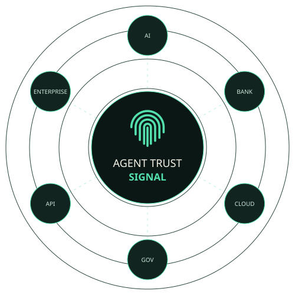
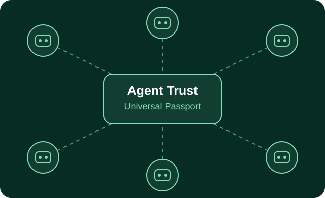

01 /
Discover
Inventory MCP servers, A2A endpoints and external AI tools using authorised sources.
Building open security intelligence infrastructure for MCP servers, agent-to-agent connections and AI tool providers.

Signal is a proposed independent infrastructure for discovering authorised AI dependencies, exchanging authenticated security advisories and mapping evidence to supplier security obligations.
Inventory MCP servers, A2A endpoints and external AI tools using authorised sources.
Correlate dependency exposure with authenticated advisories and distribute actionable notifications.
Map evidence to customer-defined Information Security Annex requirements; identify gaps for human review.
Our goal is an open specification, accessible SDKs and integrations with existing security platforms. Signal is a research and development initiative, not a live service.
Proposed API ↗POST /v1/dependencies/resolve GET /v1/signals POST /v1/assessments Proposed interfaces only
Our original passport, fingerprinting and post-quantum research remains an experimental foundation, not a competing commercial passport service.
Explore original research ↗
Independent engineering, open innovation and a belief that digital trust should cross borders.
Discover our story ↗Collect, validate and correlate security intelligence and compliance evidence for banks, enterprises, government and telecommunications providers.
Proposed subscription service, currently in development.